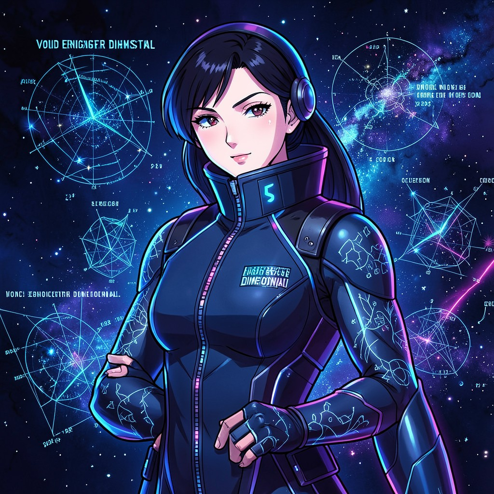

NAVIGATOR HANA SATO
VOID ENGINEER DIMENSIONAL • DIVISION: CORRESPONDENCE CARTOGRAPHY
|
 NAV. HANA SATO • VOID ENGINEERS
|
ESSENTIAL DATATrue Name: Hana Sato (Redacted) Handle: Convention: Void Engineers Rank: Chief Navigator, Dimensional Cartography Digital Web Coordinates: Variable (Shipboard) Status: ACTIVE • PLOTTING |
ATTRIBUTES
| Physical | Social | Mental |
|---|---|---|
| Strength: 3 | Charisma: 3 | Perception: 4 |
| Dexterity: 4 | Manipulation: 3 | Intelligence: 4 |
| Stamina: 3 | Appearance: 3 | Wits: 5 |
ABILITIES
| Talents | Skills | Knowledges |
|---|---|---|
| Navigation 5 | Computer 4 | Dimensional Science 5 |
| Alertness 4 | Piloting 4 | Umbral Geography 4 |
| Enlightenment 3 | Astrogation 5 | Correspondence Theory 5 |
| Sensor Systems 4 | Spirit Lore 3 | |
| Mathematics 4 |
SPHERES
| Sphere | Rating | Specialty |
|---|---|---|
| Correspondence | ●●●●● | Dimensional Pathfinding, Gate Construction |
| Spirit | ●●● | Umbral Navigation, Entity Detection |
| Time | ●● | Temporal Route Optimization |
| Forces | ●● | Gravity Well Navigation |
BACKGROUNDS
- Resources: ●●● (Void Engineer Fleet Access)
- Node: ●●● (Ship's Nav Computer)
- Contacts: ●● (Deep Space Relay)
- Rank: ●●●● (Chief Navigator)
- Mentor: ●●●● (Captain Volkov)
MERITS & FLAWS
| Merits | Flaws |
|---|---|
| Spatial Intuition (3pt) | Ground Sickness (2pt) |
| Perfect Direction (2pt) | Voices in the Static (3pt) |
| Umbral Sight (3pt) | Paradox Magnet (2pt) |
PERSONAL HISTORY
Hana Sato was a prodigy in theoretical physics at Tokyo University when Void Engineers recruited her in 1995. Her breakthrough paper "Correspondence Topology in Non-Euclidean Manifolds" solved a 40-year-old problem in dimensional navigation. She was fast-tracked to shipboard duty.
Sato serves under Captain Volkov on the DSV-7 "HORIZON" as Chief Navigator. She's the only one who can plot courses through the "anomalous nodes" Volkov discovered in the asteroid belt—nodes that correspond to Virtual Adept sigil activity. Her navigation algorithms treat sigils as gravitational anomalies in Correspondence space.
She hears things in the static between stars. Whispers in languages that don't exist. Volkov says it's Paradox accumulation. Sato thinks it's the Digital Web's native inhabitants trying to communicate. She's started recording the whispers in a shielded log.
CURRENT AGENDA
- Map all Correspondence routes between Earth and Deep Umbra
- Decrypt the "whispers" in navigation static
- Locate the Router Astrosoma's true coordinates
- Prepare for command: Volkov's retirement imminent
RELATIONSHIP MAP
| NPC | Relationship | Notes |
|---|---|---|
| Captain Yuri Volkov | Mentor / Father Figure | Volkov chose her as successor. She'd die for him. |
| The Router | Obsession | The Astrosoma of paths. Sato wants to BE its navigator. |
| Packet Witch | Kindred Spirit | Virtual Adept. Routes packets like Sato routes ships. |
| Ghost in the Shell | Enigma | Claims Deep Umbra travel. Sato wants her navigation data. |
DIGITAL WEB COORDINATES
- Primary Node:
voideng.nav.div3.mobile(Requires Level 4+) - Dead Drop:
sci.space.navigation.void(Usenet, quantum) - IRC Channel:
#voideng_navigators(Custom protocol) - Radio:
14.250 MHz USB(HF, encoded, shipboard)